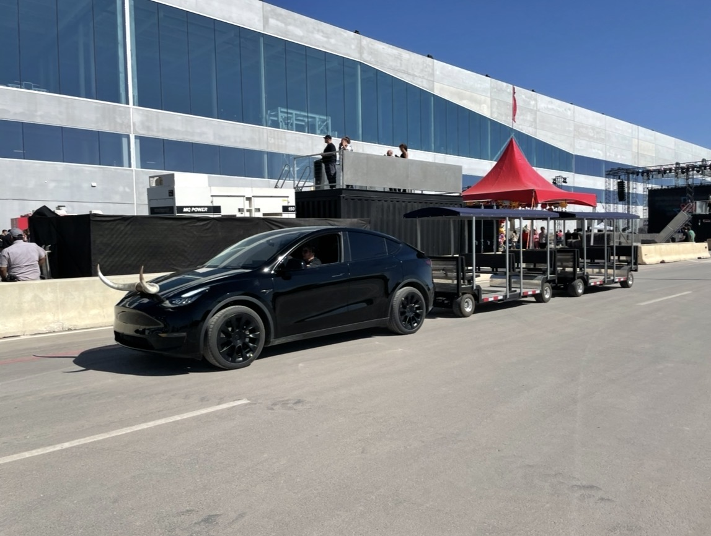

Factory & facility tours
Show off your operation.
Safely and at scale.
Walking tours limit group size, create safety hazards, and exclude visitors with mobility challenges. FlexTram is a guided tour tram that moves up to 27 VIP visitors through your facility on a controlled route — one driver, ADA accessible.
The problem
What walking tours
are really costing you
The solution
A guided tram tour.
Professional, safe, impressive.
FlexTram is a factory tour tram designed for the unique demands of showing visitors through large facilities. A single compact tram carries up to 27 VIP visitors on a controlled, guided route through your production lines, assembly areas, and R&D labs — with one driver.
Visitors stay seated and contained on a fixed path. No pedestrians wandering the floor, no safety zone violations, no PPE complications. Your guide narrates from the tram while visitors see the full operation — the way you want them to see it.
FlexTram is compact and agile — in enclosed manufacturing environments — and ADA accessible as standard. It handles 3× the group size of a walking tour in half the time, letting you impress more visitors with fewer resources.
Head to head
| Metric | Walking tour | Golf cart (6-seat) | FlexTram |
|---|---|---|---|
| Visitors per tour | 8–10 | 6 | Up to 25 |
| Tours needed for 50 VIPs | 5 | 8–9 | 2 |
| Safety risk on floor | High (pedestrians) | Moderate | Contained on route |
| ADA accessible | Difficult | No | Standard |
| Professional impression | Moderate | Casual | Executive-level |
| Indoor emissions | None (walking) | Gas/diesel varies | Compact design |
What operators are saying
"We host 200+ investor and customer visits per year. FlexTram turned our factory tour from a 2-hour walking slog into a 45-minute executive experience. Visitors see more, safety incidents dropped to zero, and we look like a world-class operation."
— Plant director, national manufacturing facility (name withheld)
Specifications
Where we operate
Common questions
Can FlexTram operate inside a manufacturing facility?
Yes. FlexTram is compact and agile with — safe for indoor factory floors, warehouses, and enclosed production environments. No ventilation concerns, no fumes near product.
How does FlexTram improve factory tour safety?
Visitors stay seated on the tram following a controlled route — no pedestrians wandering production areas, no safety zone violations, no PPE complications. Liability exposure drops significantly vs. walking tours.
How many visitors can FlexTram move vs. a walking tour?
FlexTram carries up to 27 visitors per tour — about 3× the size of a walking tour group. For 50 VIPs, that's 2 tram tours vs. 5 walking tours. You show more people your operation in less time.
Is FlexTram ADA accessible for facility visitors?
ADA accessibility is standard. Visitors with wheelchairs or mobility challenges can participate in the full tour — something walking tours and golf carts can't offer.
Can FlexTram be customized for our facility's tour route?
Yes. FlexTram runs any route you define — through production lines, around assembly areas, past quality control stations. The route can be adjusted for different visitor audiences (investors, customers, executives).
Ready to impress your visitors? Let's talk.
Tell us about your facility — layout, tour frequency, visitor types — and we'll show you how FlexTram can make your factory tour world-class.
Other industries